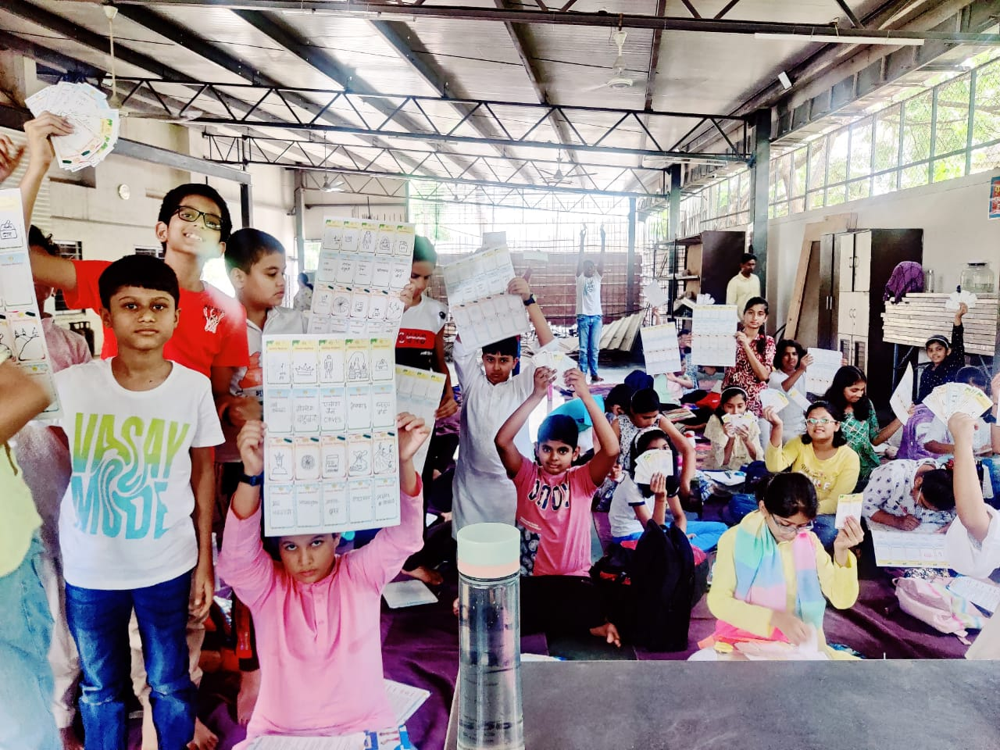
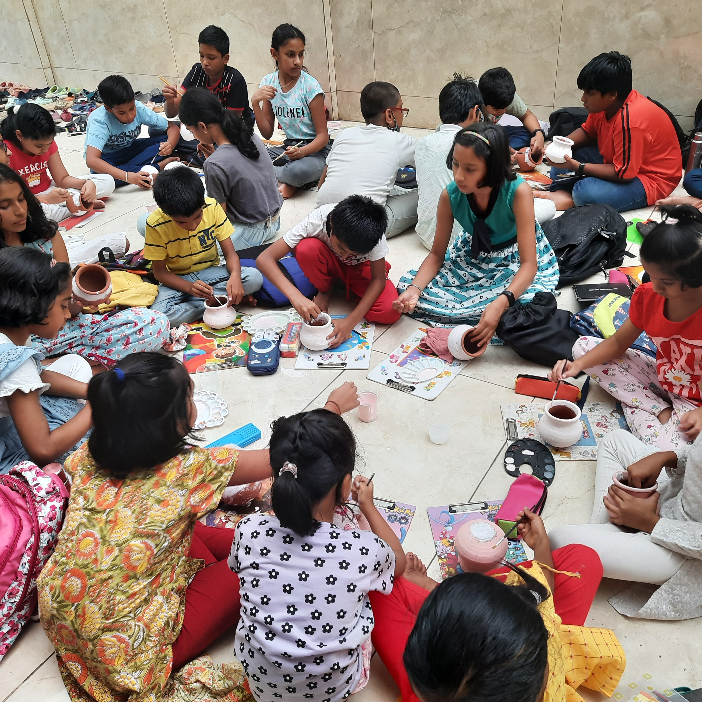
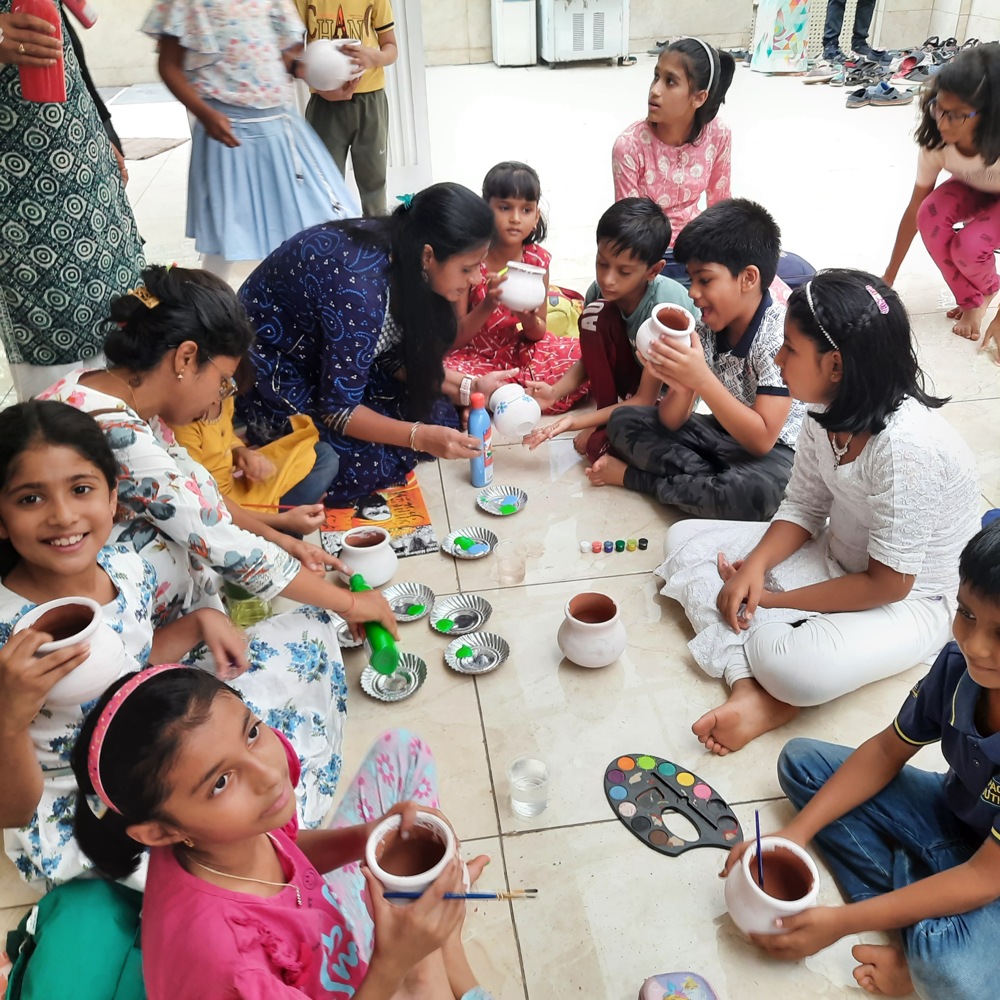
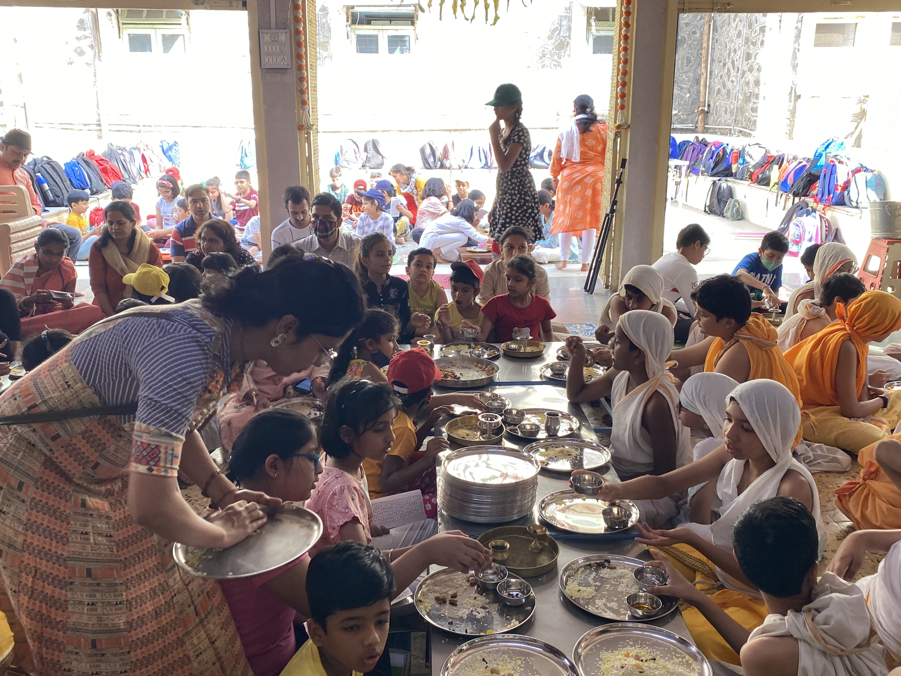
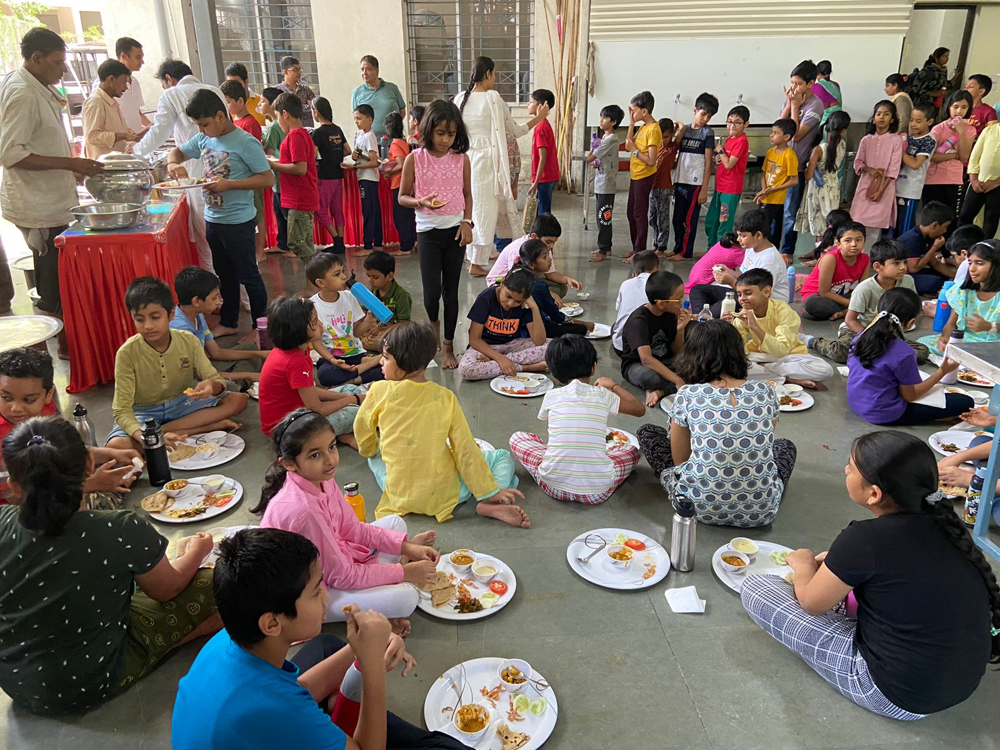
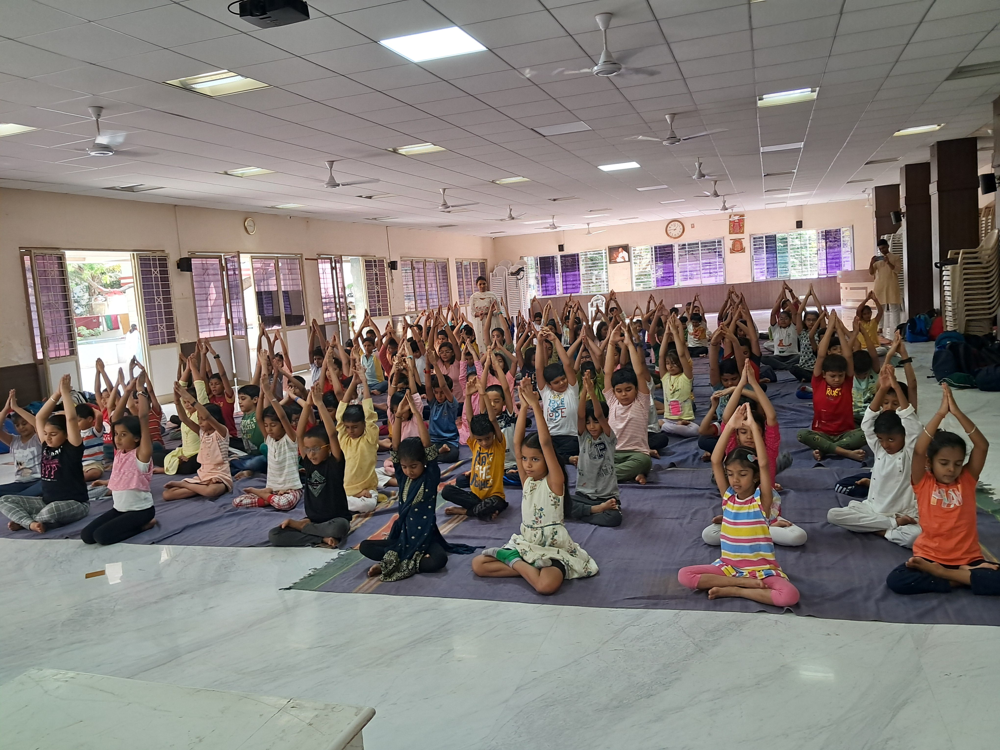
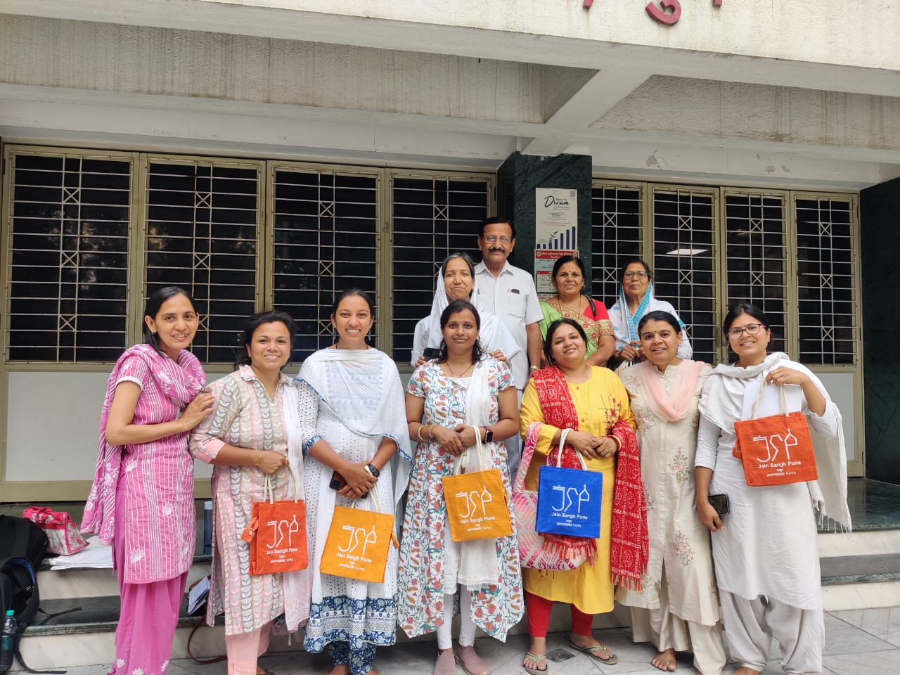

🎈 आनंदशाला (Play-based Jain Learning)
जैन संघ पुणे (JSP) प्रत्येक वर्ष एक अनोखी कार्यशाला का आयोजन करता है, जिसमें खेल-खेल में बच्चों को जैन धर्म के गहरे सिद्धांत बेहद सरल और रोचक तरीके से समझाए जाते हैं। इसके साथ ही, वर्तमान परिप्रेक्ष्य (Modern Context) से संबंधित महत्वपूर्ण विषयों को जैन धर्म के साथ जोड़कर बच्चों के सर्वांगीण और नैतिक विकास पर विशेष ध्यान दिया जाता है।
🎡 हमारा प्रभाव (Our Impact)








🚀 वार्षिक यात्रा और मुख्य आकर्षण (Yearly Highlights)
2019: माणिकबाग
माणिकबाग में आयोजित कार्यशाला में बच्चों को जैन धर्म के मूल सिद्धांतों को खेल-खेल में सिखाया गया, जिससे वे धार्मिक ज्ञान के साथ नैतिक मूल्यों को समझ सके।
- अर्हम ध्यान योग
- सच्चे देव-शास्त्र-गुरु
- Time-Travel एवं काल-चक्र
- समवशरण रचना
- हम कितने शाकाहारी - E-कोड्स का भ्रमजाल
2022: HND Boarding
वर्ष 2022 में आनंदशाला का भव्य आयोजन 2 Weekends में किया गया था। इसमें बच्चों ने अत्यंत उत्साह के साथ विभिन्न गतिविधियों में भाग लिया।
- जैन भूगोल
- तीन लोक में Treasure Hunt
- Robotics & Yoga Activities
- अभिषेक पूजन
- Toy Making Activity
2023: पारस भवन, चिंचवड़
चिंचवड़ में आयोजित इस सत्र में आधुनिक विज्ञान और जैन धर्म के सिद्धांतों के वैज्ञानिक दृष्टिकोण का तुलनात्मक और रोचक विश्लेषण किया गया।
- Jain Science v/s Modern Science
- पानी छानने एवं रात्रि भोजन त्याग का महत्त्व
- Jain Geography
- Arts & Crafts
- अभिषेक पूजन एवं Talent Show
2024: वर्धमान प्रतिष्ठान
वर्ष 2024 के आयोजन में जैन इतिहास और गुरु परंपरा को समझने के साथ-साथ मिट्टी की कलाकृतियाँ (Pot Making) बनाने की रचनात्मक गतिविधि शामिल थी।
- History of Jainism
- पञ्च परमेष्ठी एवं आचार्य परंपरा
- आचार्य विद्यासागर जी महाराज - मूकमाटी
- Pot Making Activity
2025: खराड़ी और चिंचवड़
इस वर्ष दो अलग-अलग क्षेत्रों में एक साथ सफल आयोजन हुआ। साथ ही विशेष पहल के रूप में अभिभावकों के लिए एक 'Parenting Session' भी रखा गया था।
- बारह भावना एवं मेरी भावना
- Science behind Jainism
- Feel the power of Gratitude
- Self-care Journal
2026: सुस (Special Edition)
'आओ धर्म से जीना सीखें' (संस्कार शिविर) में बच्चों के साथ बड़ों के लिए भी विशेष सत्र थे, जिससे पूरे परिवार को एक साथ आध्यात्मिक मूल्यों को समझने का अवसर मिला।
- Parenting Session & Emotional Quotient
- Know your food
- Science behind Jain Rituals
- Aimless violence (अनर्थदण्ड)
- Disadvantages of Mobile
⚠️ 2020 - 2021: कोरोना महामारी अंतराल (COVID-19 Break)
वैश्विक कोरोना महामारी के कारण और बच्चों की सुरक्षा को सर्वोपरि रखते हुए, इन दो वर्षों में आनंदशाला की ऑन-ग्राउंड कार्यशालाओं का आयोजन नहीं किया जा सका। इस कठिन समय में जैन संघ पुणे ने सामूहिक स्वास्थ्य और सुरक्षा नियमों का पूरी तरह पालन किया।
"इन सभी कार्यशालाओं के माध्यम से संगठन निरंतर बच्चों में नैतिकता, संस्कार एवं जैन धर्म की अमूल्य संस्कृति को आगे बढ़ाने हेतु समर्पित है।"